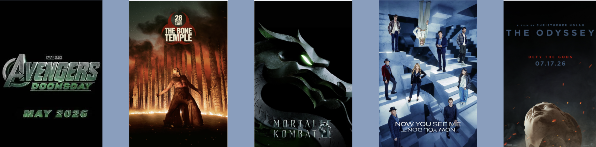

Ласкаво просимо!
Кінопортал Films&Serials створений спеціально для поціновувачів кіноіндустрії, тут ви знайдете найкращі фільми та серіали з нашою озвучкою та офіціним дубляжем.
Зануртесь у захоплюючий світ історій, героїв і неймовірних сюжетів. Від блокбастерів до культових серіалів – Films&Serials завжди поруч, щоб зробити ваш вечір незабутнім.
Фільми в HD
Чим себе зайняти після важких трудових буднів? Повсякденне життя пропонує масу варіантів, але майже кожна людина любить переглядати улюблені кінофільми.
Ми створили зручний і унікальний у своєму роді кінотеатр для перегляду фільмів в комфортних умовах. Вам більше ніколи не доведеться шукати якусь вільну хвилинку, щоб знайти відповідні кінотеатри, встигнути купити в касі або забронювати через інтернет квитки на улюблені місця. Новинки кінопрокату доступні всім користувачам цілодобово!
Скоро в прокаті
Серіали онлайн
Що стосується пропонованого списку фільмів і серіалів, які ви можете дивитися в HD якості, то він постійно розширюється і доповнюється картинами найпопулярніших хітів Голлівуду. Словом, кожен шанувальник високоякісного світового кінематографа обов'язково знайде на нашому сайті те, що йому принесе море задоволення від перегляду онлайн в домашніх умовах!
Запрошуй друзів, і ти чудово проведеш час разом з близькими та рідними людьми - наш ресурс стане прекрасним акомпанементом для твого розслабленого і веселого відпочинку!
Новини
Дуейн Джонсон каже, що схуднення пов'язане з новою роллю в кіно; він грає 70-річного чоловіка, найкращим другом якого є курка: «Мені ще далеко до мети»
Майкл Кейн повертається з пенсії у віці 92 років для зйомок у фільмі Він Дізеля «Останній мисливець на відьом 2» від Lionsgate
«The Late Show With Stephen Colbert» виграє першу в історії премію «Еммі» після завершення
Тизер фільму «Прокинься, мертвий»: Бенуа Бланк у виконанні Деніела Крейга повертається у ще більш темній загадці
Річард Лінклейтер показує вам закулісся фільму «Без дихання» у першому трейлері «Nouvelle Vague»
Глава Paramount U.K. Сара Роуз очолить Королівський фонд принца Вільяма і Кейт Міддлтон